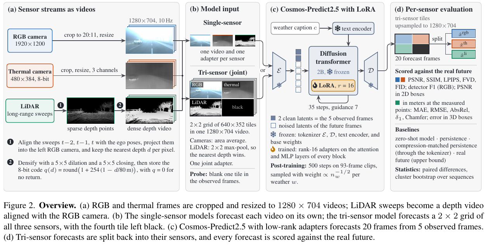
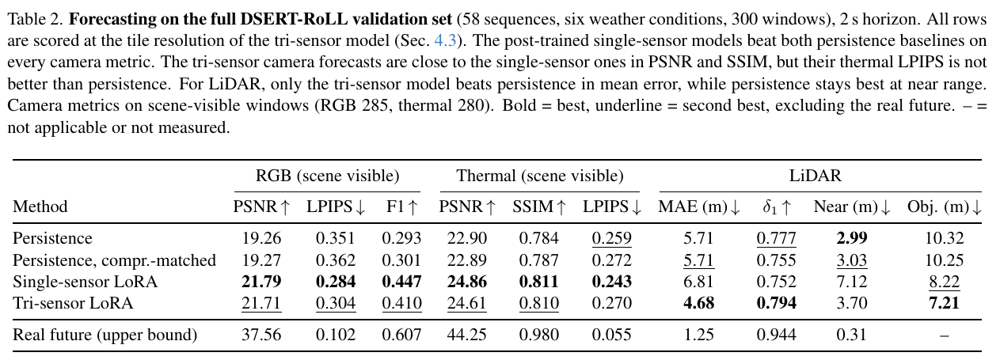

领域内 · 第一遍初读 · 2026-11-25
Beyond the Camera：真实恶劣天气中的三模态未来观测预测
Chowdhury 等 · arXiv:2611.22669v2（2026-11-18，预印本） · 11 页 PDF · 全文小节入口
范围：LiDAR 深度预测与跨模态评测，并非当前帧逐点去噪；以下区分作者表述、原文概括和图表直接观察。
01 · 一句话
概括（摘要，§1）：在真实恶劣天气序列上，作者把 RGB、热像和 LiDAR 深度放入同一个视频模型，联合预测未来 2 秒，并用经过相同压缩的持久性基线检查预测是否优于重复最后一帧。
02 · 研究问题
概括（§1、§3）：10 Hz 的五帧观测和天气/照明文字条件作为输入，输出接下来 20 帧三种模态的观测。作者将这类预测定位为生成训练数据、测试规划器以及预判其他道路参与者的工具。真实恶劣天气会降低可见光对比度；这篇论文没有测量规划或控制成效。
03 · 已有方法与缺口
作者表述（§§1–2）：多数驾驶世界模型面向 RGB，部分工作也预测或生成 LiDAR；在作者知悉的范围内，三模态联合预测及真实雾雪的分条件评测仍缺。作者指出两个具体困难：RGB 预训练的 tokenizer 无法重建极稀疏 LiDAR 投影；裸持久性基线没有承担预测分支的有损编码。这是作者对前作的定位，不作独立首创结论。
04 · 核心观察
作者表述与直接观察（§3.2、Table 1）：LiDAR 点投影只覆盖约 3% 像素；用同一个 tokenizer 检查不同输入表示，而不是先假定投影后即可直接送进模型。在一条晴天序列上，增加闭运算后近距中位重建误差 1.57→0.11 m。这是表示选择的证据，不是三模态预测在雪中的效果。§5.2 还展示了改变基线的压缩路径可改变热像模型的评测结论。
05 · 方法
概括（§§3.1–3.3、Fig. 2，PDF 第 4 页）：利用数据集位姿将过去两扫与当前扫对到同一帧，投影到左 RGB 相机并每像素取最近深度；用 5×5 膨胀和闭运算填补投影空隙、线性 8 位编码深度；三模态各缩半放入 2×2 画布，第四格留黑；冻结 2B Cosmos-Predict2.5 主干与 tokenizer，以 LoRA 进行后训练；预测后拆回三种模态并按各自协议评分。核心变化是用共享视频网格做联合条件预测，不是生成逐点雪标签。

从左到右分别是三路观测转视频、单模态或三模态输入、共享生成主干和各自评分。左侧 LiDAR 图示区分稀疏投影和填充后的深度编码；第二列的空格是布局预留，不是输入干预结果。右侧深度指标在有实测回波的位置计算，说明生成稠密的深度图不等于验证了整幅点云。
06 · 作者列出的贡献
§1 原序概括：① 六类真实天气三模态联合与单独预测（Experiment）；② 按 tokenizer 重建特性设计相机对齐深度视频（Method）；③ 采用米制/对象级评分、压缩匹配持久性和序列置信区间（Experiment）；④ 记录联合深度改进、相机保真代价及删模态实验（Experiment）。不是四个独立发明。
07 · 实验
§4.1：DSERT-RoLL 的 132 条官方训练序列中使用 35 条，不含小雪；在所有 58 条官方验证序列评 300 个窗口，六类天气；窗口并非独立，配对差值按序列聚类重采样 2,000 次。区分原样持续基线、tokenizer 匹配的持续基线、单模态 LoRA、三模态 LoRA 和上界；包含表示选择、模态置黑、定性图与定量，§6 报告单张 A100 上每次生成约 12 分钟，不是实时。
- [表示选择，§3.2/Table 1] 同一晴天样本上加入闭运算 1.57→0.11 m；深度码字试验中对数或倒数码近距更低，但远距更高，最终保留线性码。
- [整体对照，§4.2/Table 2] 同 tile 评测，2 秒的 LiDAR MAE：单模态 6.81 m、联合 4.68 m、压缩匹配持久性 5.71 m。近距联合 3.70 m，反而高于匹配持久性的 3.03 m；对象框内深度误差并非目标检测 AP。

Chowdhury 等，Table 2 · PDF 6 · 论文原图局部裁剪 · 原文定位 · CC BY 4.0 · 点击查看原尺寸 横向读表要先分辨 RGB、热像与 LiDAR 列组。LiDAR MAE 和近距误差都以米计，越低越好，但汇总范围不同。三模态在全量窗口平均误差更低，持久性近距仍好；相机列取能看到场景的窗口，不能当作全气象全模态通用胜负，也不应用深度误差代替点级去噪得分。
- [配置对照，§4.3/Table 4] 联合相对单模态的 LiDAR MAE 降 2.13 m（95% CI −3.21 至 −1.25）；RGB 对象 F1 下降 0.041，热像 LPIPS 增 0.027。联合与单独分别训练，统一评分分辨率并不等于只改变一个变量。
- [基线选择，§5.2] 全集雾况热像 LPIPS 差：相对裸持久性 +0.017，改用压缩匹配后 +0.001（CI 跨零）。这是评测路径改变，不是模型本身经过改进。
- [输入干预，§5.2/Table 6] 初始子集固定联合模型，置黑 RGB 后，LiDAR MAE 雾 +0.34 m（CI 跨零），合并小雪/大雪 +4.47 m；九条雾、四条雪，置黑训练时未见。不是对每种天气完整重训的独立因果归因。
08 · 边界
作者表述与直接观察（§§3.2、5.1–5.2、6）：深度只有相机重叠视场；8 位热像不是辐射测温；联合方案牺牲每模态分辨率，单数据集的观测预测不能证明跨设备泛化。重雪仅两条序列，13 个相机窗口均未达到可见门槛，LiDAR 置信区间含零，作者不下重雪结论。置黑实验不是实际故障，按晴雨雪汇总的相关性不能代替同天气下逐窗口互补性的证据。
09 · 后续
作者明确把完整数据集训练和每窗口多次采样留待后续（§6，PDF 第 8 页）。
10 · 逻辑链
概括：稀疏投影难重建→先检验表示经 tokenizer 后保留什么→三扫投影/稠密化与码值→Table 1 仅给局部重建对照。裸持续未经有损编码→让两边承受相同处理→§5.2 雾中热像结论改变。不同模态提供信息→把三个模态在统一画布上联合条件预测→Table 2/4 整体 LiDAR 改进但近距未超过持久性，消融范围见 Table 6。
11 · 记住五点
- 任务是预测未来传感器观测，而非清洁当前点云。
- 作者要同时解决恶劣天气下多模态预测和基线不对称。
- 稀疏投影须先核对 tokenizer 是否保留可用深度。
- 同一视频生成骨干通过三模态拼图实现联合预测。
- 2 秒 LiDAR 的整体 MAE 优于单模态和匹配持续基线，但近距未胜过持续基线。
12 · 暂不展开
§3.2 Eq. (1) 编码推导，§4.1 序列聚类置信区间，§5.3 加速评测协议复核和附录 §§8–9 的误差/样本变动。